/ TEACHING — SUMMER MODULE
Digital Fabrication,
learned by scripting it.
An elective summer module and workshop at MSA University — teaching students to model, render and fabricate complex parametric designs through Python-based visual scripting in Rhino and Grasshopper.
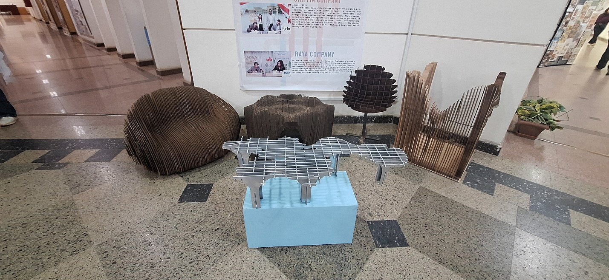
/ OVERVIEW
Complex geometry, made teachable.
Across an elective summer course, a group of talented MSA University students produced advanced digital models of complex building designs using Python-based visual scripting. They learned to use Rhino and Grasshopper — together with plugins including Kangaroo and LunchBox — to model existing buildings and to create digital renders and fabricated models.
The module ran as both classroom and workshop: parametric logic built up in Grasshopper, tested against real geometry, then carried through to renders and physical, fabricated pieces. The five projects below are the students’ own work, developed over the summer.
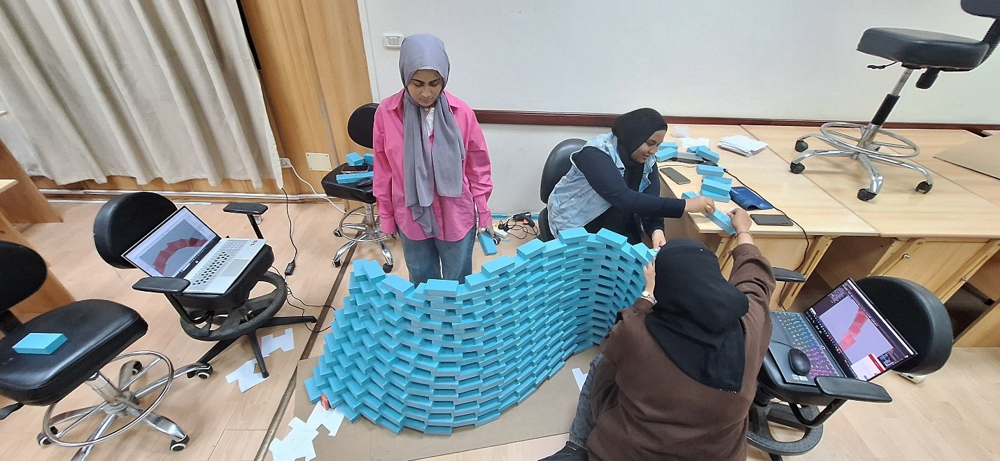
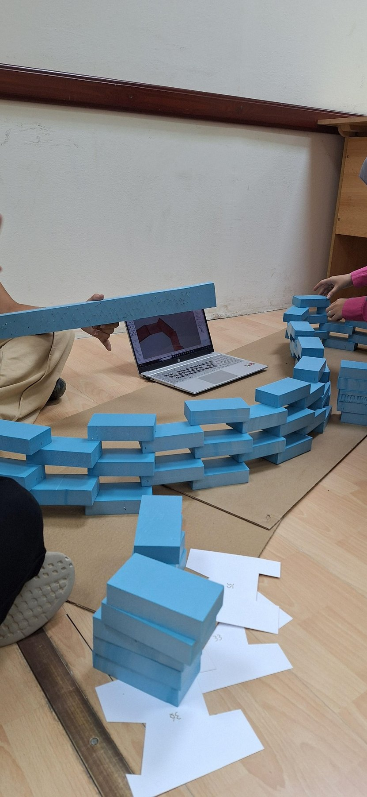
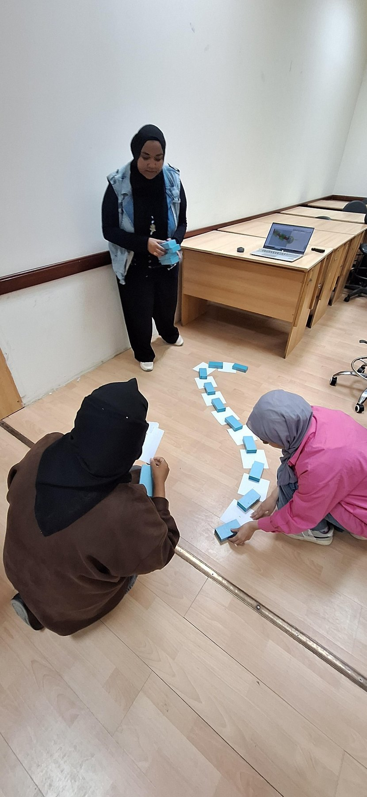
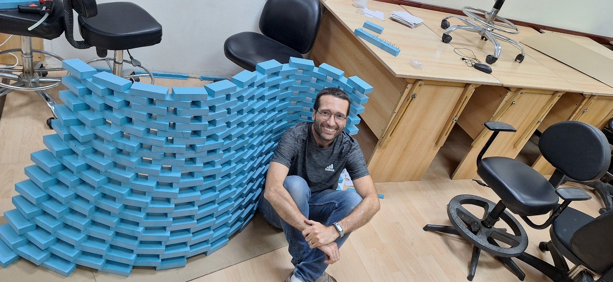
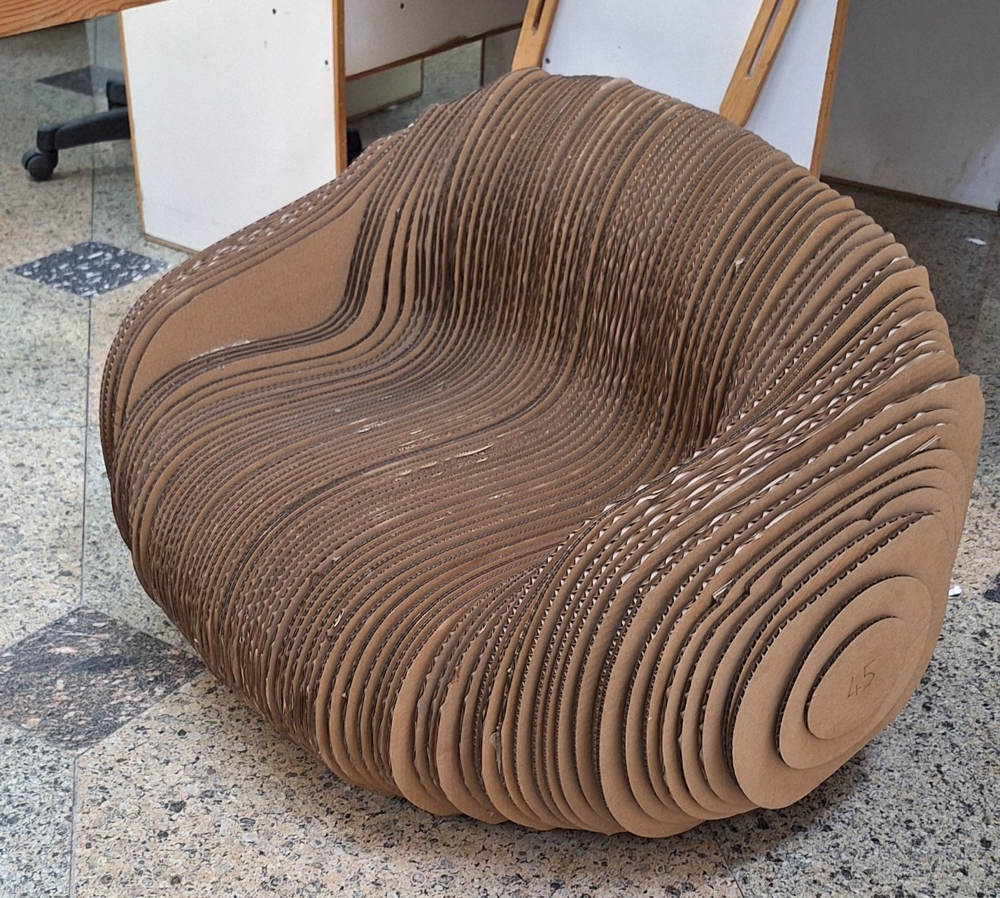
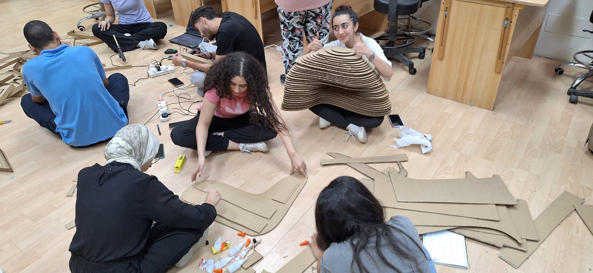
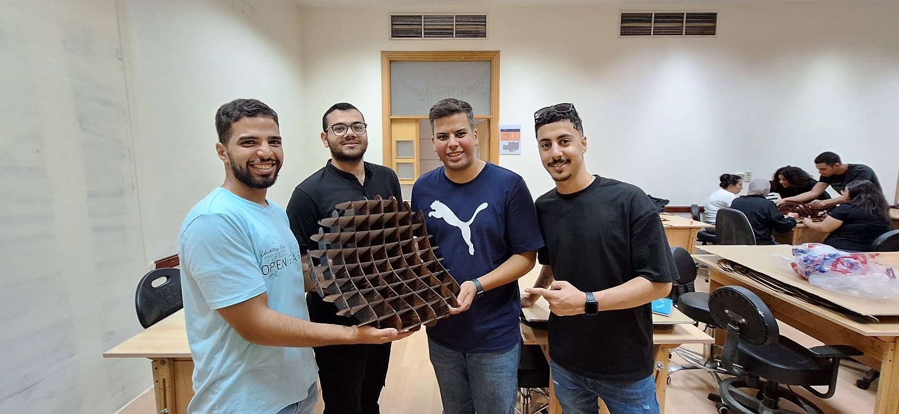
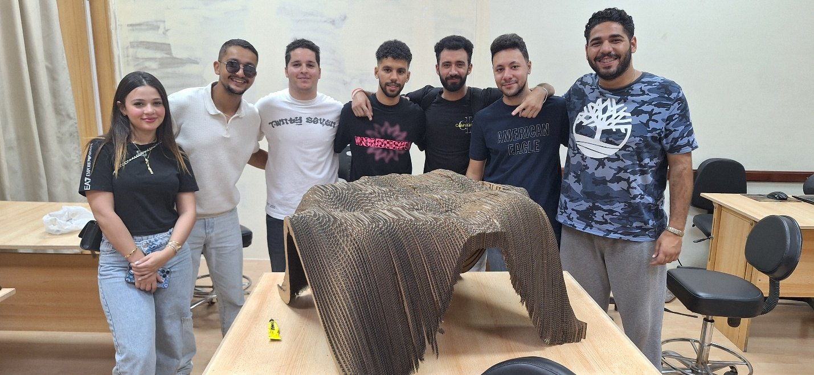
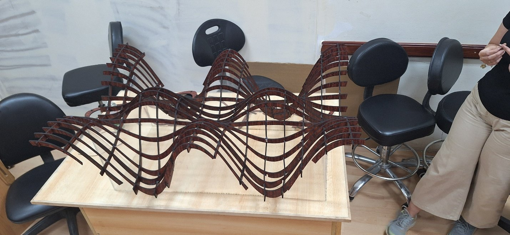
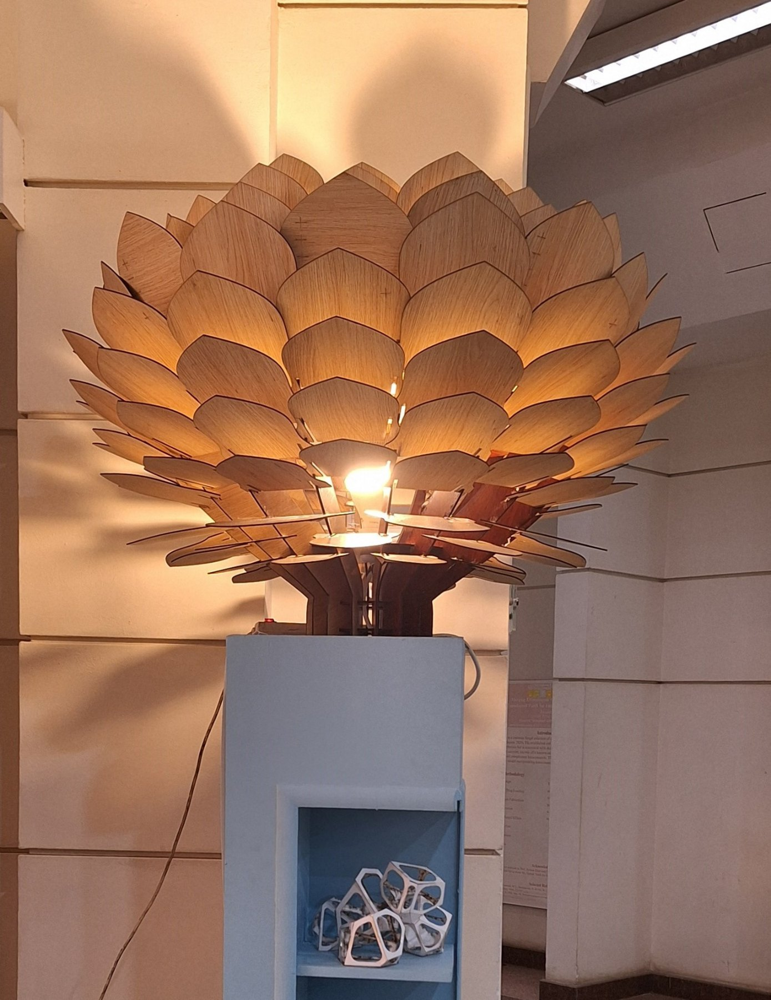